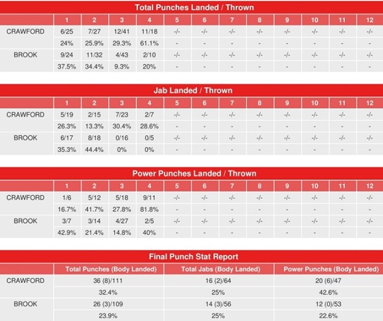

Теренс Кроуфорд — Келл Брук: Итоговая статистика ударов поединка!

Проект компьютеризированной системы Compubox обнародовал статистику нанесённых/точных ударов в поединке за титул чемпиона мира по версии WBO в полусреднем весе (до 66,7 кг) между американцем Теренсом Кроуфордом (37-0, 28 КО) и британцем Келлом Бруком (39-3, 27 КО), который состоялся 14 ноября в Лас-Вегасе (США)
Досрочную победу (ТКО 4) одержал Кроуфорд
